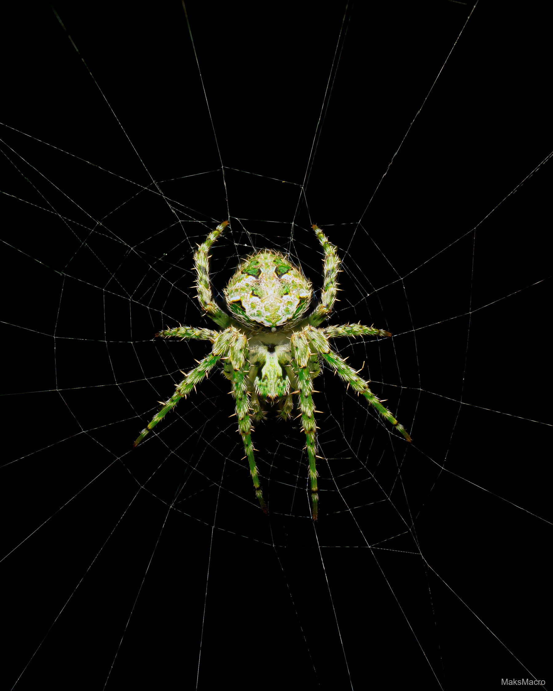

About
I'm Maks — a macro photographer based in New Zealand, focused on insects and the small, easily overlooked details of the natural world. This is a collection of that work.
I'm out shooting whenever I can, always looking for the next tiny subject hiding in plain sight.